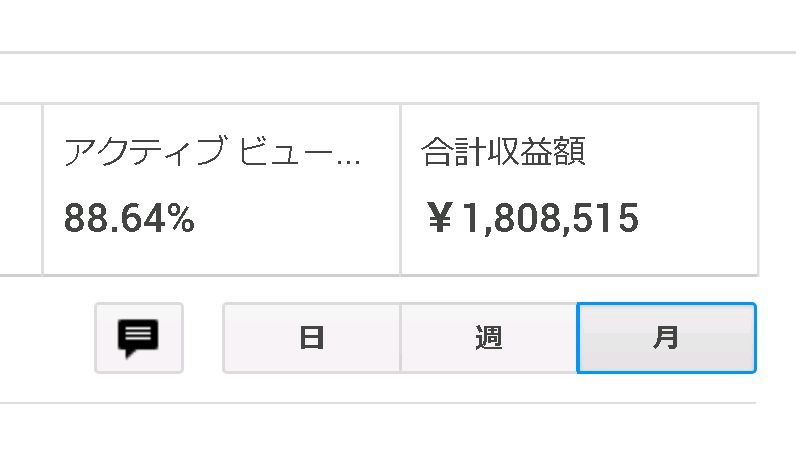

| 1日1ページ読むだけで完璧「不動産投資」 完結編: 先着50名様限定！不動産収入に匹敵するストック型収入を"無料"で構築できる教材をプレゼント! | |
| 土井八郎 | |
| (2019) | |
本書をご購入して頂きまして誠にありがとうございます。
こちらは最後に「自己資金ゼロ」お金をかけないで
不動産収入のようなストック型収入を得られる
ノウハウの教材を無料でプレゼントしておりますので
是非最後までお楽しみ下さい。
この段階までいけば後は行動を実際におこすだけです。
ここまでに得た知識を不動産業者にぶつけるだけ。
自分の中で理想だと確信する物件に巡り合うのみです。
当然ここで変に妥協してはいけません。
妥協してしまうとここまでの事が水の泡となってしまいます。
重要なパートナーになるわけですから、時間をかけすぎては
いけませんが腰を据えて業者を決めましょう。
不動産取引が成立するには当然
売り手がいないと成立しません。
買いたい側に理由があるのと同様に、
売りたい側にも何かしらの理由があります。
なぜ売らないといけないのか？
いつまでに売りたいのか？
何か特段求めている事があるのか？ないのか？
交渉の中で値引きしてもらえそうかもらえないか？
そもそも交渉のテーブルについてもらえるのか？
こういった情報を調べて把握しておかないといけません。
とはいえこうした事を調べることは私達には無理な話です。
そこで大事なのがそういった事を調べる事が
出来る業者かどうか？という事です。
この点が劣る不動産業者はここをぼかした情報を
私達に提示してきます。
こうした業者とはパートナーにならないようにしましょう。
では具体的にダメな業者はどういう情報を提示してくるか？
具体的にはこんな感じです。
・自己資金の見せ方
◎：親や親戚などから一時的に自分の口座へとお金を移す。
×：少額の口座を作らせて残高の改竄をする。
◎のケースはローンを組んだ段階で親戚に返済すれば
問題ありませんし、現金としての実態があるので
問題は一切ありません。
一方で×のケースは「私文書偽造」という立派な犯罪です。
改竄の具体的な方法はというと、残高照会画面を本来のフォントと
同じフォントで０を増やしてしまうという方法です。
この改竄が銀行にバレてしまった場合、銀行側は
ローンを組むことを当然拒否します。
ですから当然何もできなくなってしまいます。
バレなきゃいいとばかりに違法な提案してくるような業者は
アウトです。
フルローン希望を業者に伝えてみる
アパートローンは原則９０%のローンです。
しかし、出来ることならフルローンを組みたいものですよね？
そこで、理由をつけてフルローンを組みたいと
相談してみましょう。
当然ありえない理由を口走れば相手も気付きます。
なのでありそうな理由を言うようにしましょう。
どんな理由ならいいのか？
「親から自己資金を借りることはできます。
ただ手を付けるなと言われてしまって・・・。
なので何とかフルローンを・・・」
「これから複数の棟を所有していきたいと思っていて、
出来れば今は持ち出したくなくて・・・。
なんとかフルローンを・・・」
という理由なら大丈夫でしょう。
フルローンは原則から外れてしまっている無理筋な話で
言い方を代えてしまえばワガママです。
だからこそどういった対応をしてくれるか？
無理だとしても希望を叶えてくれるために動いてくれるのか？
動いてくれる業者は素晴らしい業者といえます。
・実際の業者へアプローチ
近年ネットで何でもかんでも調べることが
出来ると言われますが理想と完全に一致する物件に
出会う確率は限りなく０に近く
理想に近い物件を見つけるのも１０００件調べて
３件あればスゴいといえます。
これだけ確率が低いのですからネットで物件探しをするのは
効率が非常に悪い話です。
そこでお薦めしたいのが理想の半分程度を満たしている
物件を出している業者に問い合わせをしてみるという事です。
具体的にどんな問い合わせをすればいいか？というと
例えばメールで問い合わせするなら
こんな文章なんてどうでしょう？
「自分の求めている物件に近いものが案内されていましたので
問い合わせさせていただきました。
ぜひ一度お会いをして詳しいお話しを出来ればと思います。」
とにかく顔を合わせて会う事が重要です。
・問合せが済んだ後が本当の勝負
問合せをした後に業者側とアポイントを取ります。
その時に絶対に言わないといけないことがあります。
それが何かというと
「今、○○で××で□□で△
△
の条件の物件を探しているのですが、
問合せた物件では○○と××は合致しているのですが、
□□と△
△
に関しては少し理想と合わないと思っています。
その部分が解決できるのなら是非購入できたらと思います。
もしも折り合う事が難しいなら別の物件を探すべく
動きたいと思いますので、是非ともご紹介お願いいたします。
物件情報が入った段階ですぐ動けるように、
収入や自己資金証明に関する書類をお送り致します」
こちらの本気度や投資基準が分かれば業者側も
物件をどんどん紹介してくれるように必ずなります。
・勘違いしてはいけないこと
業者はどんな物件でも売ろうと努力しています。
それを無視して「こういう条件で探しているんだから
適した物件を紹介して」と一方的に言っていては
当然いい気分はしないでしょう。
なので一方的に自分の条件を無理矢理伝えるような事は
しないようにしましょう。
・本当に仕事をしてくれる仲介会社を見極める
不動産仲介とは具体的にはどういう事なのでしょうか。
物件を紹介してくるだけという会社が多いのですが、
私の中で「ここは本当の仲介会社だ」という判断をするための
条件がいくつかあります。
・依頼者側に立ち、本気で交渉に当たってくれる
・可能・不可能な事をはっきり教えてくれる
・継続的な関係を構築してくれる
大雑把にいうとこの３つなのですが、ここをクリアして
いるかいないかを簡単に見極める方法があります。
それがどんな方法かというとメールでの問合せです。
これだけで会社の質を判別する事が可能です。
では、どんな解答があれば良い悪いが判断できるのか？
良い業者と悪い業者の違いを解答例で紹介します。
「お世話になっております。
頂きました質問にお答えさせていただきます。
(各質問に対する回答が記載)
今後お客様の希望に沿える物件を御紹介出来ればと
考えております。その為にも是非一度お話できればと
思いますのでアポイントをいただけますでしょうか？
是非お客様の都合がよろしい日をお教えください。
宜しくお願いいたします。」
・悪い業者の解答例
「お世話になっております。この物件は・・・(物件の説明)で、
大変希少な物件です。ですのでお急ぎいただきたいですので
物件の見学日時をお問い合わせください。
宜しくお願い致します。」
悪い業者は押し付けをしてきます。
この例文は極端ですが中には上手いこと押し付けを
はかる文章を書いてくる業者もいますので注意しましょう。
苦境の時の融資付けこそ、業者の強さ
良い不動産業者は市況が苦しい時にも安定して
融資を取り付けるルートを開拓しています。
具体例を出すと、２０１２年冬には某地銀のアパートローンが
非常に絞られてきている状況でした。
多くの不動産業者がこの地銀を使って不動産融資を
実現させていましたが、一転困難な状況となりました。
しかし良い業者はこうした状況になっても独自のルートを
確保していて安定的な融資を取り付ける事ができます。
大抵の業者には銀行回りを専門にしている部署があります。
良い業者はここが機能しているという事になります。
・一棟目は管理一括型の不動産会社がオススメ
１棟目を所有しようとする段階では、持っている知識は
書籍や教材から得た知識だけで不動産管理の世界を
理解するのは相当難しいと思います。
不動産業に身を置いていた人でさえ一人で管理を行うのには
経験が不足していると感じている人が沢山いるくらいです。
そんな状況で一棟目から管理会社の良し悪しを自分で
判断してだなんてほぼ不可能と言えます。
そこで大事なのが一棟目は管理請負で販売を行う不動産業者か
関連会社に管理会社がある不動産業者を選ぶという事です。
そこで感じた事や体験した事を二棟目以降に活かしましょう。
一棟目の時に感じた管理上においての不満だったり
改善してほしいと感じた点をまとめておくとよいでしょう。
・全てを一から自分で調べるのは非効率
物件同様に周辺土地の成約価格等も自分で調べるのは
手間がかかりすぎて時間のムダです。
なので最初から業者に聞いてしまった方がベターです。
特に実際の成約価格は不動産業者専用のツールを使わないと
確認出来ないのでここは必須です。
一旦物件の詳細な資料を問合せた時に
「他に○○はありませんか？××はどうですか？」と問い合わせた上で
資料で気になった項目を自分で調べることになります。
繰り返しになりますが業者はパートナーです。
最大業者の力を使うようにしましょう。
業者は仲介手数料や管理手数料を得るので
こちらが引け目を感じるなんてことは一切ありません。
とはいえ、重要なのは「決断」です。
様々な点で決断が出来ないようでは痛い目に合う確率が
極めて高くなります。迷う悩むがあるのは当然です。
しかしどこかのタイミングで決断しなければいけません。
ここでズルズルと迷って悩んで決められない
ようではいけません。
最後は腹を括って決断する事が大事です。
業者側の大前提として、「買えない客」を
相手にしている暇なんてありません。
買えない客を買える客にするくらいなら、
最初から買える客を
相手にした方がはるかに楽だからです。
では「買える客」とは何か？
個人的には年収５００万円以上あれば「買える客」と
業者側は判断をするでしょう。
さらにいえば自己資金を物件価格の１０分の１程度
「見せ金」として現金で確保しておけば完璧です。
・とはいえ「買える客」というのは投資に関しての
ビジョンがしっかりとしています。
「何でもいい」では業者も困ってしまいます。
髪を切りにいって「お任せ」とか「適当に」といって
美容師さんを困らせた経験ありませんか？そ
れと似たようなもので
投資ビジョンが明確なお客さんの方が業者からしても
相手にしやすいのは明らかです。
そこで業者に好かれるためにもスケジュールの工程表を
しっかりと作っておきましょう。
業者とやり取りした後に一過性の関係でなく
継続的な関係を構築しておきましょう。
当然ですがほったらかしにしておけば
業者からの連絡なんて来ません。
連続的な関係を構築しておけば業者から有益な情報を
得る事が出来る可能性が高まります。
定期的な状況の報告だったりをすることがポイントです。
私自身こうした関係を構築できた結果、業者側から
興味深い物件を何回も紹介してもらえました。
そして大事なのはこうした関係を複数の業者と作ることです。
これで物件の比較ができてより理想に沿った
物件に出会う事に繋がるでしょう。
投資スケジュールをしっかりと話せるようにしておく。
長期戦になる覚悟をしておき、いい業者様は常に近
況報告で連絡をこまめに取っておく。
違法提案にだけは絶対に乗らない。
絶対に希望する物件は出ると強く思い、出たらすぐ
に行動すること。あとは買うのみ！頑張って！！
最後（特典）
最後まで精読して頂きまして
ありがとうございます。
きっと、この書籍を手に取って頂い方は
少なからず不動産収入にご興味が
ある方だと思われます。
ですが、不動産投資の一番のネックは「資金」
です。
値段が値段なので軽い気持ちで買って破産にでも
なってしまったら大変なことになってしまいます。
とてもじゃないけどそこまで「リスク」を取るのは
難しいかと思われます。
ならどうすれば良いのか？
ここで私からの提案なのが「Amazon ATM化計画です」
何故、Amazonを使ったビジネスが良いのか
軽くご紹介させてもらいます。
私が初めて挑戦したのが物販（転売）でした。
物販も物販でしっかりと結果が出て
初めてのビジネスということで毎日が刺激的で
サラリーマンという立場でありながら
夜の２：００まで作業をしていたり次の日が
休みのときは朝方まで作業をしていました。
かと言って辛いかと言われた全然辛くなく
むしろ楽しかったです。
ですが物販の弱点は常にお金が無いことです。
もちろん利益は毎月１５万以上出ていましたが
その利益が全て在庫になってしまうため
お金がない状態です。
よくある転売の教材で１品５０００円の利益が出る！と言った
情報は確かに合っていますが
５０００円丸々残るわけではありません。
物販は楽しかったのは事実でしたが
お金が残らなのでは意味がありません。
そして、次に始めたのがYouTubeです。
YouTubeは物販のように在庫を扱わないビジネスで
しかもちゃんとGoogleからお金が振り込まれるため
これは大正解でした！
副業でも７０万近く稼ぐことが出来いつの間にか
毎月１００万以上稼げるようになりました。
こちらが２０１９年のYouTubeの収益になります。

この画像だけ見たらYouTubeはやっぱ稼げる！
自分もチャレンジしたい！
と思う方がいると思います！
ですが私はYouTubeはオススメしません！
えっ！て思うかもしれませんよね。
たぶん、逆の立場なら私もそう思います。
では何故YouTubeはオススメしないのか...
それはビジネスとして不安定だからです。
どういうことかと言うと毎月１００万稼いでも
突然翌月の収益が「０円」になってしまうからです。。
何故ならYouTubeの規約が定期的に変わって
それに伴って突然稼げなくなってしまうからです。
現に今の私はその状況でYouTubeからの収益は０円です!
ここで学んだことはお金を稼ぐことで一番大事なのは
「稼ぐ」ことではなく「稼ぎ続ける」
ことです。
つまりキャッシュフローを止めないことだと気付きました。
私は運良くYouTubeと同時並行で今のビジネス
Amazonを使ったビジネスをやっていましたので
キャッシュフローは止まっておりませんでした。
Amazon ATM計画はYouTubeよりかは爆発力は無いと思います。
ですが、それに匹敵するポテンシャルはあります。
１つ目は再現性
２つ目は無在庫
３つ目は初期費用必要なし
４つ目安定性
５つ目ストック型ビジネス
調べてもらえば分かりますが今のYouTubeで
収益化の道は茨の道です。
きっと多くの人が１円も稼げないまま諦めてしまうと思います。
ですがAmazon ATM化計画はすぐにアカウントが作成ができて
その日からスタートが出来て初月でしっかり稼ぐことが出来ます。
実際に私は初月で３万、２ヶ月目６万、３ヶ月目１０万と
着実に伸ばしています。しかも、YouTubeと違って
定期的に規約が変わるわけではないので安定性は抜群です。
しかも、一度構築してしませば毎日のように
収益が発生して毎月あなたの口座にAmazonから
お金が振り込まれます。
しかも、自己資金ゼロで。
こちらのビジネスですがビジネス初心者の
キャバ嬢の女の子に実践してもらいましたが
しっかり稼ぐことができ２ヶ月目で
５万以上稼げております。
なので私だから稼げる！てわけではなくて
誰でも稼げるビジネスだと確信しました！
今回、この書籍を手に取って頂いた方限定で
私が作成した動画コンテンツを無料でプレゼントします！
もちろん、初期費用０円で稼ぐことが出来るので
「ノーリスク」で稼ぐことが出来ます！
このコンテンツには稼ぐためのノウハウを
しっかり詰め込んでありますのですぐ稼ぐことが可能です。
コンテンツご希望の方は次の画像に添付してある
LINE＠
にご登録してください。
ご登録後、ご購入した書籍をお知らせ下さい。
メッセージ確認後コンテンツをプレゼントします。
是非このチャンスをものにしてください。